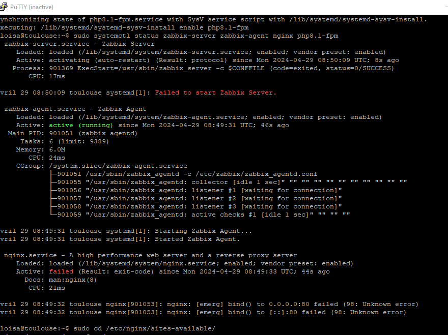
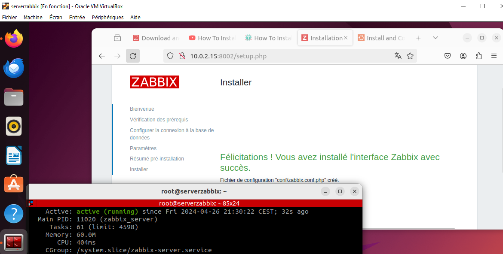

échec d'installation Zabbix, enlien avec NGINX serveur. Zabbix est un logiciel qui supervise de nombreux paramètres réseaux ainsi que la et l'intégrité des serveurs.

Zabbix utilise un mécanisme de notification flexible qui permet aux utilisateurs de configurer une base d'alerte e-mail

